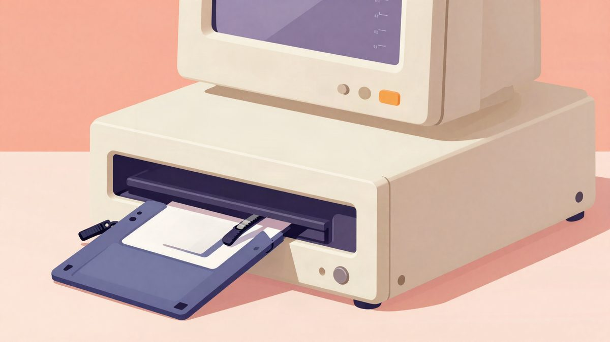

boot.zip: ZIP datoteka koja se može i raspakirati i pokrenuti kao bootabilni sustav na starim PC-jevima

David Oberhollenzer je napravio boot.zip, ZIP arhivu koja je istovremeno i valjan boot image za računala s klasičnim BIOS-om. Isprobana je na pravom starom hardwareu: Pentiumu MMX, i486 DX2 i Am386DX-40.
Developer David Oberhollenzer napravio je ZIP datoteku koja se može otvoriti kao obična arhiva, ali i pokrenuti kao boot image na računalima s klasičnim BIOS-om. Zove se boot.zip. Sadržaj joj se čita običnim alatima za raspakiranje, a ista datoteka zadovoljava i Multiboot specifikaciju te zahtjeve BIOS-a za pokretanje.
Boot.zip nije običan boot sektor spremljen u arhivu. Oberhollenzer kaže da se može pokrenuti izravno u QEMU-u, preko načina za izravno učitavanje kernela, a učitati ga može i svaki boot loader koji podržava Multiboot. Ako se zapiše na disketu kao disk image, kompatibilna stara računala mogu se s nje pokrenuti preko BIOS-a, bez izmjene arhive.
Kako to radi
Trik se temelji na preklapanju strukture ZIP formata i x86 instrukcija. ZIP datoteka počinje oznakom "PK", a prva datoteka u arhivi, ZIPHEAD.COM, spremljena je bez kompresije. U njoj su boot kod i identifikacijski podaci koje traži Multiboot.
BIOS pri pokretanju čita prvih 512 bajtova medija i provjerava nalazi li se na kraju oznaka 0x55AA. Developer je tu oznaku smjestio na odgovarajuće mjesto u arhivi. Polja u zaglavlju ZIP datoteke (verziju, zastavice i vrijeme izmjene) odabrao je tako da ih procesor, kad izvršava kod od početka datoteke, protumači kao valjane instrukcije i dođe do pravog boot koda.
Posebno je zanimljivo polje s vremenom u ZIP zaglavlju. Kodirano je kao x86 instrukcija skoka, pa bajtovi koji su inače samo metapodaci arhive postaju dio pokretanja. ZIP tako ostaje valjan, a na početak datoteke ne treba dodavati zasebne boot podatke koji bi mogli narušiti kompatibilnost.
Test na pravom hardwareu
Oberhollenzer je boot.zip isprobao i na stvarnim starim računalima: Pentium MMX, i486 DX2 i Am386DX-40. Nakon pokretanja sustav prikaže tekst iz datoteke MESSAGE.TXT iz arhive. To pokazuje da program stvarno čita podatke iz arhive i izvršava kod iz nje.
Hoće li se boot.zip dalje razvijati i ima li praktičnu primjenu osim demonstracije tehnike, nije rečeno.
Izvor: cnBeta
Povezani članci
 Moždani implantat vratio govor pacijentima s ALS-om: razumljivost do 94 posto, jedna pacijentica ponovno pjeva15. studenoga 2026.
Moždani implantat vratio govor pacijentima s ALS-om: razumljivost do 94 posto, jedna pacijentica ponovno pjeva15. studenoga 2026.- Cortical Labs je povezao 15 bioloških računala u sustav HIVE27. listopada 2026.
- WPSplinter: Broadcomova greška iz starog koda ugrožava milijune routera21. listopada 2026.